The sole purpose of collection snippets is to reference other snippets. The most obvious example is a folder which contains a bunch of files: in the Snippets App, a folder is represented with a static collection:
{
"body": {
"iconName": "package",
"path": ["Private", "Notes"],
"views": [{ "type": "folder" }],
"snippetReferences": [
"a886215c-c022-4ba9-b746-40ad0f084985",
"e83bb143-a678-4dc6-a05a-a5ea3a3587f3",
...
]
},
"pluginName": "static-collection"
}
The JSON representation of a static collection, using a folder view and referencing other snippets.
The path property makes the app show the folder in the navigation sidebar
under Private > Notes. The snippetReferences property represents the
snippets that belong to this folder. The result is a 'Notes' folder as seen
here:
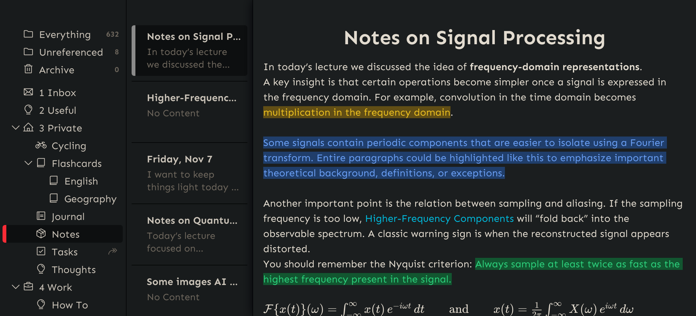
Besides static collections, which explicitly reference snippets, there are dynamic collections, which implicitly reference snippets through a filter. A filter can be freely configured to match for specific conditions. For example, it can be used to look for tasks that are not done and due after today:
{
"body": {
"title": "Due After Today",
"filter": {
"type": "group",
"operator": "AND"
"items": [...],
},
"views": [ { "type": "list", ... } ]
},
"pluginName": "dynamic-collection"
}
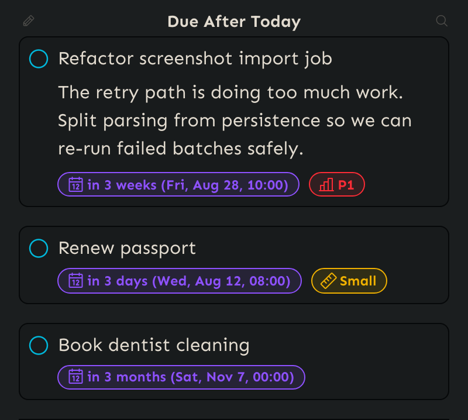
As you can see, there is no explicit listing of snippets - instead, what the list references will be dynamically determined based on the filter.
Static vs. Dynamic Collections
At this point, a question might arise: when do we use what?
Static collections are very easy to use because there is no need to configure a filter. Once created, you can simply add snippets inside them. Since they keep an explicit list of snippets, it is possible to explicitly declare the order of items. This, in turn, is useful if you want to have a table on a dashboard with rows that are in a specific order.
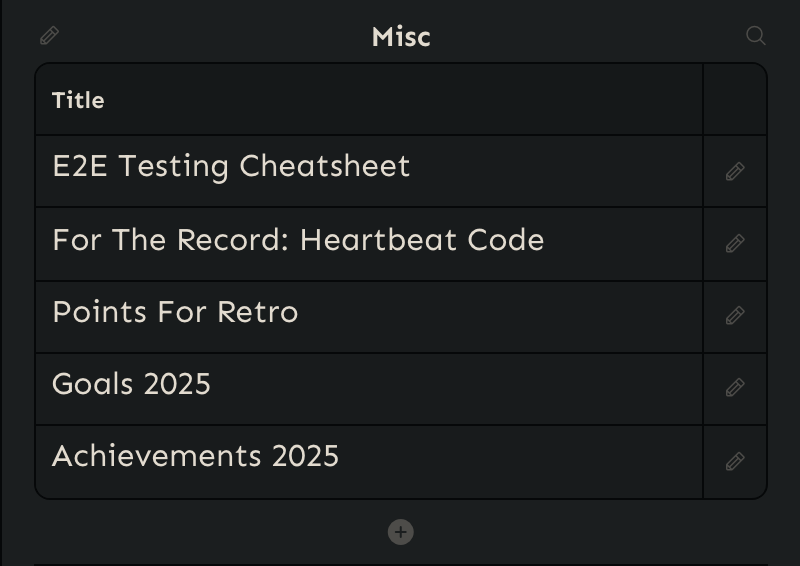
Dynamic collections take an extra step to set up: we need to declare what to filter for. This usually means that we need to have a plan in our head of how our notes are structured and how we can extract the information we want. Most of the time we'll want to filter for the presence of specific attributes, so having set up attribute schemas and having created snippets which use them is a prerequisite.
But the extra efforts are worth it, because more complex use cases such as task management become possible. For example, the following task dashboard is made up of three dynamic collections, each looking for specific traits such as tasks being open or done and having specific due dates:
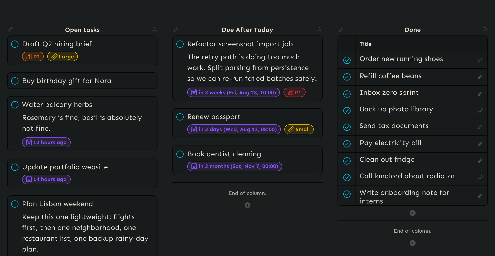
Here's how the filters look for each of these collections:
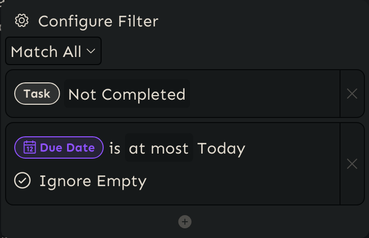
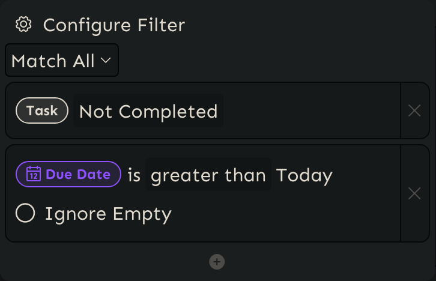
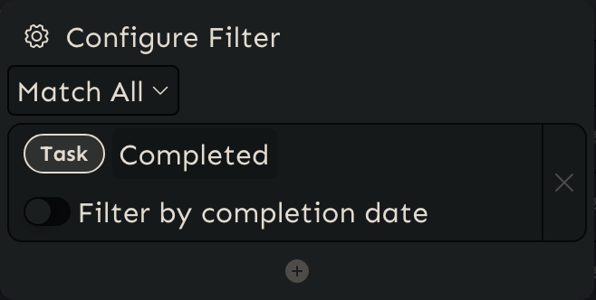
Fields
For every collection, we can define which fields should be displayed. In a table, these fields correspond to columns. In task management, fields represent the properties a task can have, such as priority or due date.
Fields are either based on attribute schemas we define or on built-in fields provided by the app, such as title and description.
The 'Open Tasks' list we saw before is made up of the following fields:
- Done: Shows a checkbox that controls the completion state of the task attribute that is attached to an invidual snippet.
- Title: The first line in a rich text document. In the list view, it represents the task title.
- Description: The rest of the body of the rich text snippet. In a list view, it represents the task description.
- Priority: An attribute representing the priority levels P1-P4.
- Due Date: An attribute representing a due date.
- Size: An attribute representing the size (Small, Medium, Large).
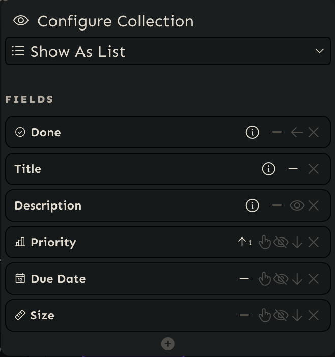
Every field has additional configuration options. For a start, we can choose by which fields we want to sort. Attribute fields also have special display modes: For example, we can choose under which circumstances the title, the value or both shall be displayed when the attribute is present on a snippet. We can also choose the location (left, bottom, right) it shall be displayed when rendered in a list.
Views
The underlying datastructure of a collection never changes, but we can choose how it shall be displayed through views.
Table
Displays the referenced snippets in a table view. Each field appears as a column. You can sort by columns, search within the table, and select multiple items at once
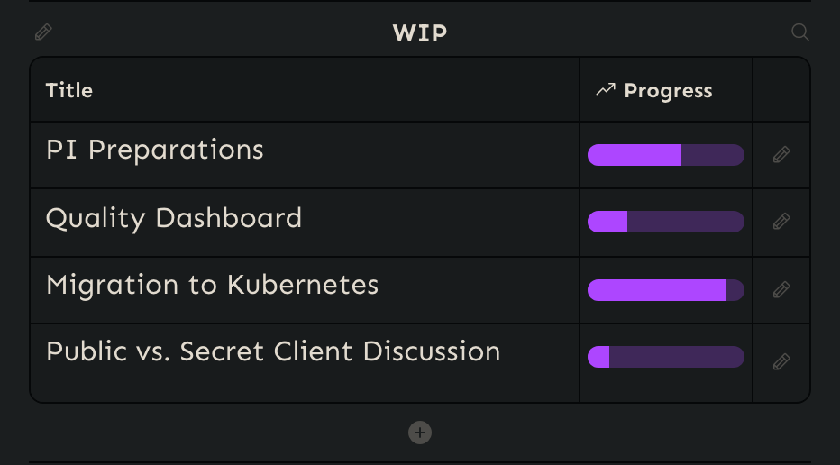
List
Displays the referenced snippets as a list. Each entry appears as a separate card, showing the selected fields. Lists are especially useful for task management scenarios.
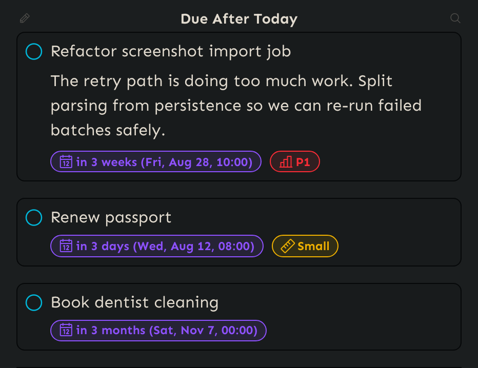
Timeline
Displays the referenced snippets as a chronological timeline. This makes it easy to use a collection as a journal or activity log.
A time range picker lets you focus on specific periods, such as daily, weekly, monthly, yearly, or all entries.
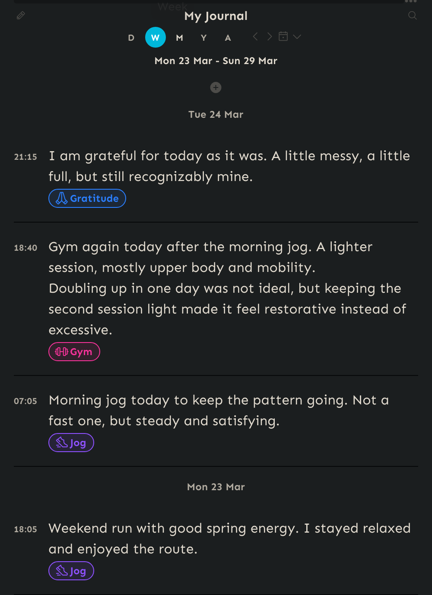